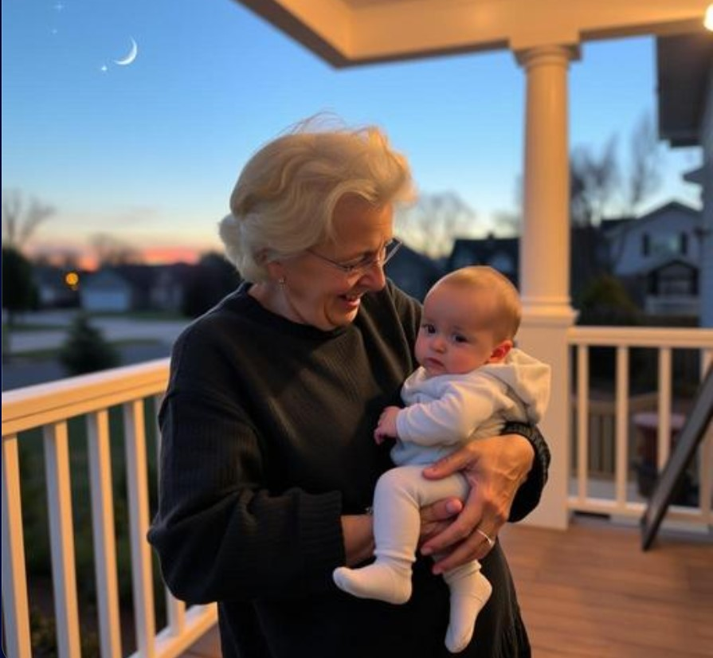

There's a particular phenomenon that catches a lot of new grandparents off guard: the sheer, almost embarrassing intensity of the feeling. People who raised their own kids with relative composure, who handled toddler tantrums and teenage moods with practiced calm, suddenly find themselves completely undone by a grandchild's smallest gesture — a wave, a word, a nap on their shoulder.

Why Grandparent Love Hits Differently
Researchers studying grandparent-grandchild bonds have found something genuinely interesting: grandparents often report a more uncomplicated, less anxious form of love than they experienced as parents, precisely because the daily responsibility (and daily worry) belongs to someone else. Psychologists studying this dynamic describe it as something close to "love without the logistics" — all the emotional intensity, considerably less of the stress.
This isn't a knock on parenting, which carries its own profound rewards alongside the exhaustion. It's a genuinely distinct emotional experience, one that catches a lot of grandparents by surprise in its sheer intensity, especially the ones who didn't expect to feel quite this much, this fast.
What New Grandparents Actually Give Up (Gladly)
The classic joke holds up: grandparents reliably abandon weekend plans, golf games, and entire vacations at the first hint of grandchild availability. Surveys of new grandparents consistently find this isn't reluctant sacrifice — it's enthusiastic reprioritization, often described by grandparents themselves as one of the most satisfying changes of their later adult life.
A Role With Surprisingly Little Formal Recognition
Despite how profound this life transition often is, becoming a grandparent gets remarkably little formal recognition compared to other major milestones — no widely shared tradition, no broadly recognized "first grandchild" celebration the way there is for a wedding or a graduation.
Marking the Day a Grandparent Was Made
Some families have started filling that gap with a star on GalaxySpace, created the same week a grandchild is born — both names, the date, and a message about a love that, by all accounts, arrives faster and hits harder than almost anyone expects going in.
You can create one here — a small, permanent marker for a role that deserves a lot more recognition than it usually gets.